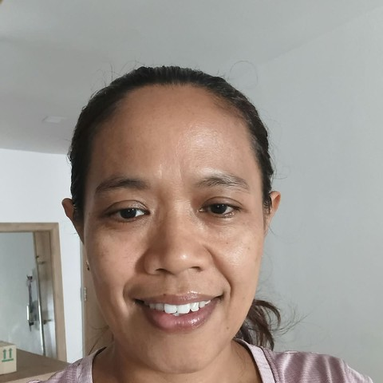
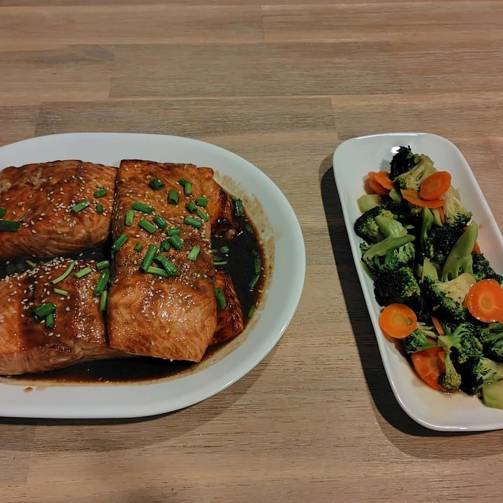
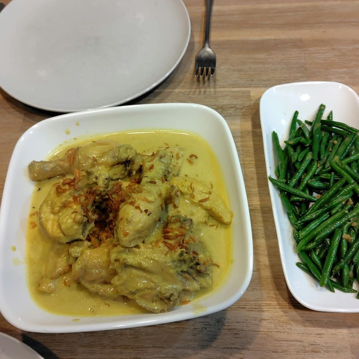
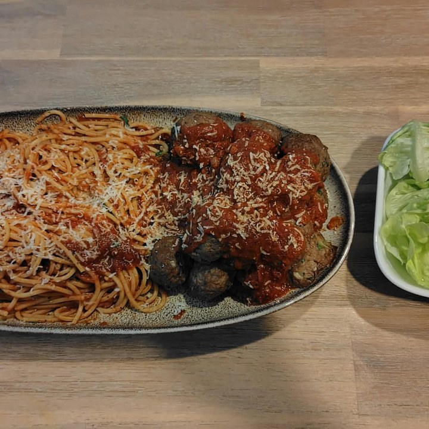

Indonesian · 46 · Children, cooking & household
Her employer will take a reference call from any family proceeding seriously with her. Eighteen years in Singapore across three long placements — six and a half years, then three, then three more. She cooks dinner for the whole family most nights, and is comfortable with a large dog in the house.
Trust signals
Our strongest trust signal — the family she works for now, speaking for her directly. We arrange the call once a family has met her and is proceeding seriously.
At a glance
The essentials
Available from
11 February 2027. She goes home to Indonesia next month, returns to Singapore on 10 January, and sees the family’s house closed up before she transfers.
Why she is available
The family she is with are moving back to Indonesia for good. Nothing to do with her work — they are the ones offering to speak for her.
Where she is now
Since September 2023 — an Indonesian and British family with a boy of six and a girl of five, and a large dog. The classes and playdates, dinner for the whole family, and breakfast for the children.
Six and a half years, one household
December 2012 to April 2019 with a Canadian-Singaporean family and their daughter. She stayed through serious illness on both sides of that household, and left when the daughter went to Canada and the home was given up.
Children she has cared for
A boy of six and a girl of five now, a girl of five before that, and children of seven and eight earlier still. She would rather have children of about ten and upward, and says so herself.
Cooking
Dinner for the whole family most nights and breakfast for the children. Western, Japanese and Indonesian by her own photographs — lasagne, katsu with curry, teriyaki salmon, opor ayam. There are pictures further down this page.
Dogs
There is a large dog in the house she is in now and she is comfortable with him — the care of pets is on her record for that household. Few helpers will take a big dog.
Best fit
A household with older children, or none, that wants the cooking taken seriously and the house kept properly. A dog is no obstacle.
In Singapore since March 2008.
March 2008 to January 2009 — ten months. Her first job abroad: a couple with a baby of six months. She was new to the country and to the language, and it was hard going.
January to February 2009. Six weeks with an older couple in good health, their two grown children and a second helper. It did not work, and she moved on.
July 2009 to June 2012 — three years. A Singaporean Chinese household: the parents, the grandmother, and two children of about seven and eight.
December 2012 to April 2019 — six years and four months. A Canadian-Singaporean family with a daughter of eleven. Serious illness came into that house early on and did not leave it; Mursini stayed through all of it. It ended when the family sent their daughter to Canada and the household was given up. The longest placement on her record.
April 2019 to July 2020 — fifteen months. An American family with daughters of four and five. It was not a fit for her, and she asked to move after a year.
July 2020 to September 2023 — three years and two months. A Singaporean Chinese family with a girl of five, first in a landed house with the grandparents and then in a condominium without them. The cooking, the car and a little gardening alongside the house itself.
September 2023 to now. An Indonesian and British family with two small children and a large dog — the classes, the playdates, dinner for the whole family and breakfast for the children. They are returning to Indonesia for good.
Where she’d suit next. A household that wants the cooking and the house run by the same pair of hands, with older children in it or none. Three of her placements have run three years or longer, one of them for six and a half, and she stays when things get difficult. She is comfortable with a dog, including a big one.
Her employment record and her full work history are available to interested families, with her consent.
Her own photographs, from the household she cooks for now.



Tell us a little about your household and we’ll be in touch within 1–2 business days. We’ll only move forward if it feels like a genuine fit.